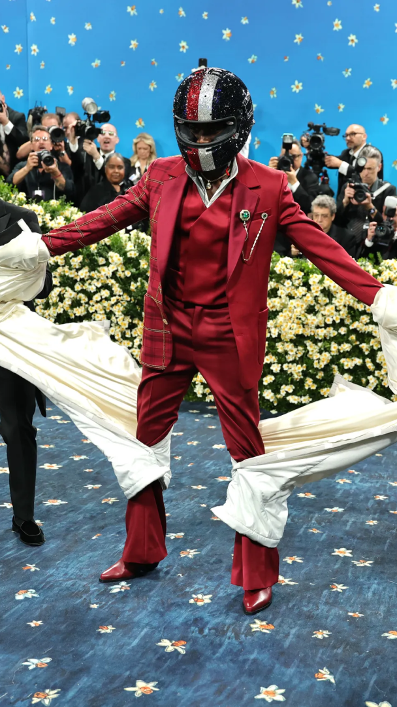
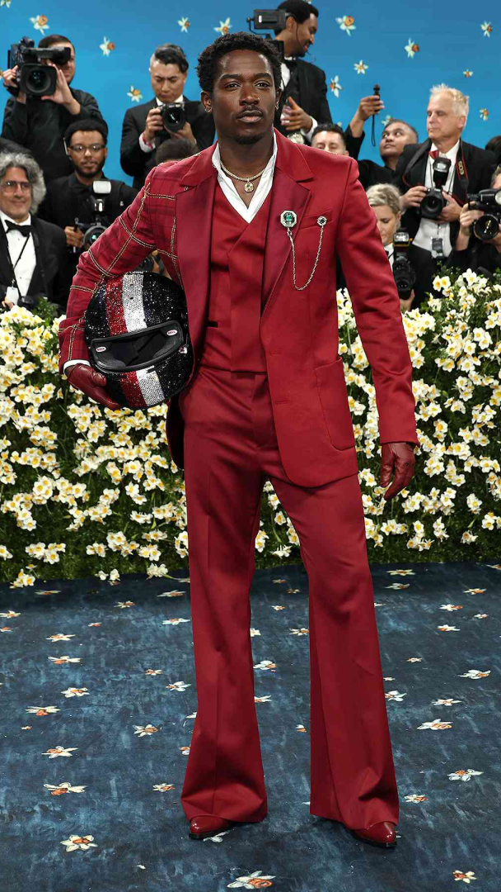

vogue

dia dipasupil/getty images

jamie mccarthy/getty images
Happy Second Monday of May, one week after we witnessed one of the best Met Galas in recent memory. This year stood out for me not just because of the stunning fashion, but because of the theme: Black Dandyism, with a focus on tailoring. The historical significance embedded in this theme raised the stakes, pushing attendees not just to dress to impress, but to honor a legacy—one that celebrates how fashion shapes and expresses Black diasporic identities. With a theme so rich in cultural weight, the looks needed to rise to the occasion. So yes, the stakes were definitely high but boy did some looks really deliver.
getty images
jamie mccarthy/getty images
dimitrios kambouris/getty images
The Co-Chairs: I’d be remiss to start with anyone other than our four co-chairs: Colman Domingo, Lewis Hamilton, A$AP Rocky, and Pharrell Williams. Each of these men has rightfully earned his place as a pillar in today’s fashion landscape and they did not disappoint. Domingo stunned in a regal blue Valentino cape, exuding majesty. Hamilton, in all white Wales Bonner (beret included, naturally), paid homage to his British heritage. Rocky donned a sleek all-black suit of his own design, classic and bold. Pharrell, ever the innovator, wore a pearl-embellished Louis Vuitton blazer of his own making. With impeccable attention to detail and craftsmanship, each look was flawlessly executed, deeply personal, and perfectly aligned with the theme. The bar was set high, and they set it.
sophia wilson/getty images
dia dipasupil/getty images
sophia wilson/getty images
Laura Harrier & Zac Posen: I have so much to say about this look. For starters, wow. I audibly gasped. And when I found out that the one and only, my lord and savior, Zac Posen was behind it?? I immediately stood up and applauded. I could (and probably will) write an entire blog post dedicated to Zac Posen and his Midas touch—how he singlehandedly revived a dying franchise and transformed it into one of the most coveted brands of the moment. How he inspired me to shop at said brand, which I had long written off. How he pours his soul into his work, showing artistry that unquestionably proves his devotion to his craft. But I digress. Back to this look. Zac Posen, unsurprisingly, knocked it out of the park and, frankly, showed every other designer up. Not only did he honor the theme with grace and intention, but he also honored Laura Harrier’s history and presence, crafting something utterly ethereal for the biggest night in fashion. From the billowy sleeves to the sharply tailored vest, the long, draped, silky pants to the soft monochrome palette, everything about this Gap Studio look was flawlessly executed. It was a heavenly, modern embodiment of dandyism and proof that Zac Posen deserves to be recognized as one of the greatest creative forces in fashion right now.
dimitrios kambouris/getty images
jamie mccarthy/getty images
hunter abrams
Doechii & Pharrell: Never did I think I’d one day say I wanted an LV branded on my cheek—but once again, Doechii has done the impossible. Her interpretation of the theme was undeniably on the nose, but when you’re dressed by Pharrell in Louis Vuitton, how could it not be? From the natural hair to the boxy Damier suit shorts, the monogram tuxedo jacket, mini Speedy in one hand and a cigar in the other, every detail of this look was deliberate and perfectly executed. It wasn’t just tailored clothing; it was tailored for Doechii. She carried it all with the confidence, charisma, and flair that she brings to everything she does—making the look not only memorable, but deeply aligned with the theme.
getty images
ny times
getty images
Alton Mason & Marco Falcioni A true red carpet standout that made my jaw drop, Alton Mason in custom BOSS by Marco Falcioni was nothing short of a work of art. This was exactly what a Met Gala look should be: extravagant, unique, and unmistakably on theme. From the exaggerated silhouette of the black overcoat and the heart-shaped chest cutout, to the ultra-reflective silver fabric and the sparkling silver eyepatch paired with a black fedora (a clear homage to hip-hop legend Slick Rick the Ruler), every element of this ensemble was meticulously considered. It was a Met Gala masterpiece that instantly landed in my top looks of the night. Just perfect. No notes.
dia dipasupil/getty images
savion washington/getty images
cindy ord/mg25/getty images
Doja Cat & Marc Jacobs: Marc Jacobs never fails to impress me, and this year was no exception—especially with Doja Cat’s look. It set the standard for what Met Gala fashion should be: a true collaboration between designer and wearer. This look was so Doja Cat and so Marc Jacobs, all while perfectly honoring the theme. Bold, personal, and on point—truly the pinnacle of what Met Gala fashion aspires to be.
vogue
dia dipasupil/getty images
jamie mccarthy/getty images
Damson Idris & Tommy Hilfiger: I was fully prepared for the lead actor in the upcoming F1 movie to arrive in an F1 car and racing suit and for it to be a kitschy, tasteless marketing stunt. But I was proven so wrong. The F1 movie marketing team is clearly playing their cards right, because Damson Idris showing up in a full racing suit and bedazzled helmet only to dramatically reveal a classic, impeccably tailored Tommy Hilfiger suit underneath was nothing short of epic. It was the red carpet reveal of the night. Far from kitschy or overdone, it was thrilling to watch and executed with just the right amount of theatricality. As the official fashion sponsor of the film, Hilfiger delivered a look that was refined, timeless, and absolutely on theme. The elegance of the suit suited Idris, the Hilfiger brand, and the night's aesthetic with effortless precision.
getty images
demi moore instagram
demi moore instagram
Demi Moore & Thom Browne: This one took me embarrassingly long to get but honestly, that only added to its brilliance. She’s a tie. Duh. So simple in theory, yet so impactful in execution. This is exactly what makes the Met Gala so magical: a seemingly straightforward concept can evolve into a stunning, theatrical work of art. Demi Moore’s look perfectly paid homage to the theme of dandyism and tailoring, turning a familiar accessory into a full-blown statement. Once it clicked, I couldn’t stop thinking about it. It was everything a Met Gala look should be: extravagant, unexpected, and a literal walking piece of art. Well done, Thom Browne. Well done.
diljit dosanjh instagram
getty images
diljit dosanjh instagram
Diljit Dosanjh & Prabal Gurung: As the first Punjabi to attend the Met Gala, Diljit Dosanjh showed up and showed out—in what ended up being my favorite look of the night. With Punjabi heritage myself, seeing someone wear such a traditional, cultural, and historic ensemble with such visible pride and reverence was incredibly moving. Designed by Prabal Gurung and inspired by the Maharaja of Punjab, the look was regal, powerful, and absolutely Met Gala worthy. Every detail was steeped in meaning—from the hand-embroidered map of Punjab and Gurmukhi alphabet on the back of the cape, to the silhouette that honored royal Indian traditions while speaking the language of high fashion. Together, Dosanjh and Gurung created a look that got to the true heart of the theme—beautifully blending both of their identities and aesthetics. It was a stunning reminder that fashion transcends language and borders, serving as a global medium for art, culture, and history. Breathtaking—and beyond special to me.
Overall, what made this Met Gala so special was how many attendees embraced the theme and made it deeply personal—tying it to their own histories while showcasing the transformative power of fashion through the lens of Black Dandyism and impeccable tailoring. It made this year’s Met one of my absolute favorites.
As a whole, the looks perfectly encapsulated what the Met Gala should be: a thoughtful homage to the theme, reimagined through individual expression; a seamless collaboration between designer and wearer, each bringing their distinct voice; and, above all, a celebration of the unmatched beauty, depth, and power that fashion holds.